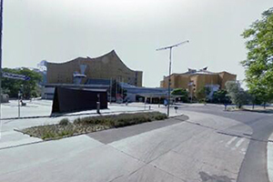
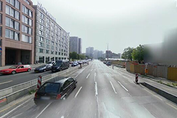

Living Environment Recommandation
We have helped you find the right place! Please read analysis process.
Or click here to explore Berlin freely1. Get Star !
Please slide the mouse wheel on the right side of the screen.
2. District Analysis
Have a preliminary understanding of the various districts of Berlin. Including POI, crime rate, house price and other information.
3. Choose the District
Through the integration of these data, we conclude that Mitte (District No.10) is the most livable.
4. Data Collection
Google SVI were collected every 50m along the road, and a total of 11,735 street view photos were collected for our analysis.
5. Calculation
1.Using a pre-trained model in Keras, e.g., VGG, to extract the feature of a given image;
2. Use Principle Component Analysis to down-dimension the data to 10 dimensions
3. Compare the 10 features of image in the dataset with the sample image. Give it a score (0-1) according to mean square error
6. Result
After getting the score of each SVI, we chose the highest two photos as the recommended place of residence.
7. Choose You Place!
SVI No.5522
Score=0.8458
8. Choose You Place!
SVI No.1003
Score=0.8470
That's all.
Select again Back
If you have any ideas and suggestions, please contact us.
Email